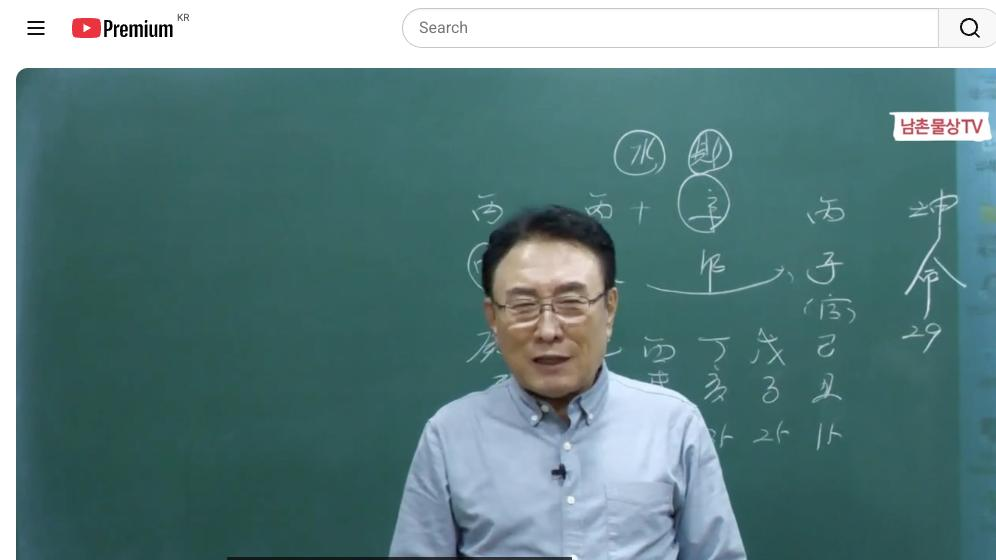
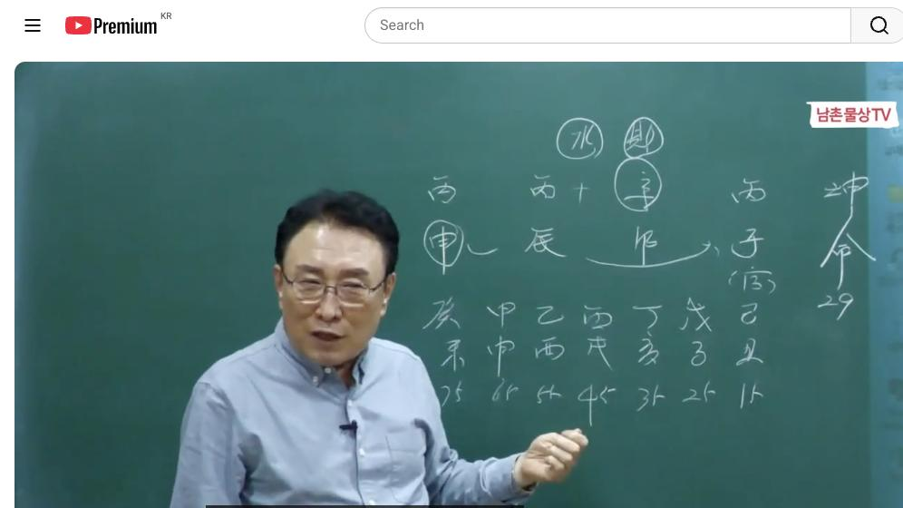

남촌물상TV 전체 문서 › 동영상 V0065
[실전사례]33 병화가 세 개? 이것 알면 운명이 바뀐다 상담문의 : 010-3139-6645

| 문서 번호 | V0065 (동영상) |
|---|---|
| 영상 URL | https://www.youtube.com/watch?v=bya0jK0utdc |
| 영상 ID | bya0jK0utdc |
| 게시일 | 2024-04-11 |
| 길이 | 30:36 (1836초) |
| 조회수 | 2,406회 (수집 시점 기준) |
| 카테고리 | Howto & Style |
| 자막 | ko (자동생성) |
| 수집 시각 | 2026-08-30 19:08 (KST) |
영상 설명 (YouTube 설명 원문 그대로)
병화가 세 개? 이것 알면 운명이 바뀐다 #실전사례 #병화일간 #운명
전체 자막 (654구간 · 타임스탬프 클릭 시 해당 장면으로 이동)
[0:01][음악]
[0:04]자 즉석 실관 이니까 뭐 저나
[0:07]여러분이나 다 똑같아 저 처음 본
[0:09]사주니까 저도
[0:11]몰라 병자 신묘 병진
[0:15]병신이다서 이렇게 보면 사람들이
[0:17]처음한 사람들이 여러분 좀 답답하지
[0:19]아이고 이거 사주가 전부 다 병병 돼
[0:22]있어서 뭐라고 얘기를 하지 이렇게 할
[0:24]거 아닙니까 근데 이제 우리들이 그
[0:27]배웠던 대로 마시면 돼 어려울 거
[0:29]없어요 자 쓰리 병은 밝아진
[0:32]어두워진다 밝아 밝아진다 이제 이게
[0:35]특징이 론 먼저 생각하고 이제에
[0:39]병화가 병화가 본인이이 병진일주
[0:43]아닙니까 그럼 이런 사람들 경우는
[0:45]병화 잘난 맛이 있지 잘난 맛 근데
[0:48]둘이 있을때나 너도 이런 사람 경우는
[0:50]이렇게 그 거의 솔직 담백 하죠 왜
[0:53]하나가 돼 있고 밝으니까 그래서 사람
[0:56]괜찮네 이렇게 할 수 있는데 그다음에
[0:59]이제 핵심적인 문제가 있죠 자 그럼
[1:03]우리가 이제이 사람의 재관을 보면은
[1:06]자 여기에 재물 있죠 자 재물이 여기
[1:08]있단 말이에요 자 제가 부모 자리에
[1:12]재물이 있다 그다음에 관은 뭐디
[1:16]있어요 여기에 관이 있다
[1:19]그렇죠 관이 신자로 돼 있네 이렇게
[1:23]딱 보면 아이고 관이 밑으로 하나로
[1:25]끝까지 연결돼 있어요 이런 경우를 그
[1:29]잘 이해하셔야 됩니다
[1:30]뭔 얘기냐면 관이 있고이 신자 지로
[1:34]돼 있다
[1:35]얘기는 저 물이 끝까지 가서
[1:38]신자진이다 그러면 결과적으로이 금이
[1:41]끝에가 있네라고 할 수도 있어요
[1:43]재물이 얼 보시 그림을 봐도 알 수
[1:45]있잖아 관이 시작해서 끝에 자식
[1:49]자리까지 있네 그 얘기 아닙니까
[1:51]간단하게 여기는 이제 자식 자리니까
[1:53]자식 자리까지 연결이 돼 있다 근데
[1:56]여자니까 관이 중요한 거예요 쉽게해서
[2:00]근데 이제 관을이 사람이 선택할 때
[2:04]어떻게 선택하느냐가 중요하죠 이런
[2:06]사람 보면 절대 여러분 당황하실
[2:08]필요가 없어 사주 모실 때 다른
[2:11]사람들은 고절한 사람은 당하려고
[2:13]모르지 우리는 당황할 이유가 하나도
[2:14]없습니다 배우신 대로 자 그러면
[2:18]여기에서 3대 1로 합을 했죠
[2:22]부모 자리에서 3대 1로
[2:24]재무하이라이트
[2:30]자 자 이렇게 이렇게 딱 보면
[2:32]뭐라고까요 이제 부모하고 관계성에서
[2:35]내 관이 생겼다는 얘기는 해석을 한번
[2:38]해 볼까 뭐라고 하
[2:39]을까요 부모하고 관인고 당겼어 그럼
[2:42]통변을 때 뭐라
[2:44]그래 성민 선생
[2:47]부모가 부모의
[2:49]사업 사업이 아니라 부모하고 나고
[2:54]하부에서 관이 왔다는 얘기는 부모가
[2:58]선택해 준 남자를 택해라 네 이렇게
[3:01]된 거 아니에요 그냥 걸 알아야 돼
[3:03]그것을 그러니까 여러분들이 제관의
[3:06]입장 그러면 자 부모 자리에 재물도
[3:09]있잖아요 그 제관을 다 어디서
[3:12]만들어줘도 부모 자리에서 만들어 준다
[3:15]보시면
[3:16]된다이이 사람 저저 어어 우리
[3:21]어리음 형제관 있어
[3:25]없어요 형 얘기는 안
[3:28]했고요 자를
[3:31]봤는데음 이제 그 얘기 나중에 하고
[3:34]근데 이제 형제가 있냐없냐 물 본
[3:37]거예요 제금 볼
[3:38]때 근데 우리는 이제 그이 부모
[3:43]자리의 굉장히
[3:45]중요성 어 그럼 자 본인이 직업 상을
[3:49]그럼 뭘 또 해야 되냐 그 자 부모
[3:52]해서 나의 남자 선택과 나의 직업과
[3:57]나의 돈이 다 부모한테 나온 거
[3:59]아니에요 그 이제 부모한테 모든 것이
[4:01]다 소가 부모 영역에 포함돼 있는
[4:04]거예요 그럼 이런 사람들이 대부분
[4:07]이제 어떻게 보면
[4:09]그 부모 자기가 애동 딸일 수도
[4:12]있어요 애동 딸일 수도 있다고요
[4:15]그래서 부모하고 같이 사는 사람
[4:18]이렇게 해도 돼요 그럼 자 이런
[4:20]사람이 부모를 모시고 살까 안 모시고
[4:23]살까 그 말이야 고살 모시고 살아
[4:26]재관이 다 된 거예요 그 이런 것이
[4:29]이제 이런 걸 분석을 할 때
[4:31]여러분들이 쉽게 이해를 하시는게 좋다
[4:34]그러면 결혼이 만약에 친정이 하고
[4:38]산다면 친정 부모를 모시고 살아야
[4:41]되고 만약에 시부모 하고 살았다 해도
[4:44]뭘까 시부모를 모시고 사게 좋다
[4:47]이렇게 되는 거예요 근데이 사람들
[4:49]요즘 사람들이 진짜만 소리만 들어도
[4:52]반 맛이 없어 머리가 아파 요즘
[4:54]여자들
[4:55]그러죠네 아이고 대다 크게
[4:58]나왔어 그렇게 그놈 시자 소리 자기도
[5:01]진짜도 되면서 나중에 되면서 꼭
[5:05]얘기할 때는 뭐예요 자만 소리 만들
[5:07]내가 머리가 띵띵 아프다고 여자들이
[5:09]하는 얘기가 그 있지 젊은 사람들
[5:11]가만히 이제 얘기하는데 들어보세요
[5:13]시가집 시점만 소리만 나면 아주 반
[5:16]맛이없어 그러면 시어머니 생각면 탁
[5:19]같다고 그냥 악당으로가 사람도
[5:22]있어 근데 그래서 나는
[5:26]항시이 우리의 그분의 딸도 그냥 우리
[5:29]그분의 딸도
[5:31]더더
[5:32]늙어지는 그래서 부모 마음은 아버지가
[5:35]생각하면 같아 그러니까 참고 이해하고
[5:38]해야 돼 하고 이제 자꾸 얘기를 하죠
[5:40]그 그냥 내 내 딸이 아니라 그분의
[5:43]딸 그게 제 엄마의
[5:48]딸이지 이제 그렇게 표를 합니다 근데
[5:52]이제 이런 사람들 경우는 그이 부모를
[5:55]모시고 살면 좋지않냐 하는 걸 얘기
[5:57]드는 거예요 만약에 만약에
[6:00]부모를 하면 내가 떨어져서 산다
[6:03]생각하면 자 어떤 놈이
[6:06]먹어시고 있는 놈 아니 내가 부모를
[6:09]안 모시고 살면 아람 이놈이 가져가
[6:13]버려 이놈이 그럼 내 밑에 동생이 다
[6:17]재물 찾아갈 수 있는 사주가 된다 그
[6:18]말이에요 그러니까 자 쉽게 얘기해서
[6:21]부모 재물을 뺏기지 않고 살려면 내가
[6:24]부모하고 살아야 돼 얘 같은 얘기죠
[6:27]이런 사주가 눈에 들어오잖아요 저
[6:29]처음본 사주야지
[6:30]눈에 들어옵니다 이렇게 자 그러면
[6:34]부모를 모시고 살아야 될 팔자가 이런
[6:38]팔자요 저는 이렇게 봐요 근데 부모를
[6:41]안 모셔 풀어놔
[6:43]버렸어 그러면은이 재물은 뿌리가 어디
[6:46]요리 간다 그 말이에요 언니가 안
[6:48]하면 내가 해 내가 엄마 아버지 모셔
[6:51]재물요 다 가게 돼 있어요 이제
[6:53]이렇게 전체적으로 해석을 할 수가
[6:57]있습니다 그 이제 어떻게 보면
[7:00]그어 부모를 모시고 산다 하니까
[7:04]요즘에 안 된 사람도 있지만이 여자
[7:06]사주는 부모를 모시고 사게 좋은
[7:09]거예요 그래야 재물도 생기고 나의
[7:12]남편도 말을 잘
[7:14]들어 자 그 얘기는 그
[7:18]얘기는 내 남편의 얘기는 왜 그러면
[7:21]내 남편 얘기가 그 잘 듣고 안 듣고
[7:24]하게 이게 남편이 솔직해서 살 불명이
[7:27]있겠어요
[7:29]없겠어요 불면이 많지 불면 요소가
[7:31]어디서 나온가 봐봐요 자 합수
[7:34]무슨 물이에요 수 계수 아니에요 계수
[7:38]경신 합수
[7:40]계수 그 계수가 나를 흐리게 그러니까
[7:45]결과적으로 스트레스는 시부모한테
[7:47]받는게 아니라 누구한테 받아 편한
[7:49]남편한테 스트레스를 받고 막 이산해
[7:52]이렇게 딱 던지면 되는 거예요 상담할
[7:55]때 여러분들 그렇게 하시면 돼
[7:57]아이고 시부모가 살아도 당신 부모는
[8:00]잘하는데 결과적으로 당신은 남편 때
[8:02]스트레스 받고 살잖아 그러면 맞아요
[8:04]맞아요 맞아요 여자들 막 그랬지 이제
[8:05]이런 걸 보고 얘기하는 거예요
[8:08]간단하게음 그 이걸 보고 설명하시면
[8:10]돼 통변을 이렇게 하는
[8:13]겁니다
[8:15]통변을 그래서 이제 하나씩 하나씩
[8:18]배운 대로 얘기를 하게 되면 병신합
[8:21]계수가 나를 어둡게
[8:23]만들어 그러면 쉽게
[8:25]얘기해서 남편이 나를 더더 더 스탠스
[8:28]받게 하는 거지 이제이 이렇게 답이
[8:31]설명을 해 줘야 돼 사주 볼 때
[8:33]그래서 시부모는 나한테 잘하려고
[8:35]노력하는데 왜 남편 내 신랑은 나한테
[8:39]이렇게 스트레스를 주나 이렇게 말을
[8:42]엮어서 여러분들이 통변을 해 주시면
[8:44]된다 그 말입니다 문에 보이잖아
[8:46]이렇게 슬슬 어 자 그런데
[8:51]어 그러면 이제에 남편과 그 부모
[8:55]시부모의 관계는 형성이 됐어요 됐어
[8:58]그 그다음에 그다음에
[9:01]이제 여기에서 본인이 뿌리가 신구의
[9:04]뿌리가 유금이 그러면 자 신구의
[9:06]뿌리가 금이라는 것은
[9:10]볼까요 그래서 부모를 모시고 살면
[9:13]나한테 재물이 오는 거예요 이해하셨죠
[9:16]그럼 왜 교수님 왜 부을 모시고 살면
[9:19]재물이 와 할 수 있잖아요 근데
[9:23]여기에 신금의 뿌리가 유금이 나고
[9:25]진유 학금 물해 그러니까 그 재물이
[9:27]나한테 오는 거예요 이해 됐죠 그래서
[9:31]이제
[9:33]그어 가르킨 사람은 이런데 질문할 수
[9:37]있잖아 왜 그 어떻게 해서 저
[9:38]교수님은 학문으로 그걸 증명하십시오
[9:42]눈에 들어와야 돼이 설명할 못하면
[9:45]교수 그만 둬야지 할 필요 없지
[9:48]그니까 이러기 때문에 학술과 학문에
[9:52]따라서 이렇게 하기 때문에 너하고 하
[9:56]말이에요음 근데 이제 진유 합금을
[9:59]하면은 무슨 수가 생겨 자오묘유
[10:03]생겨 자오 묘가 그러면 시가 집에서
[10:07]제일 불만을 많이 가진 사람이 누구냐
[10:10]그 말이야 형제관 중에서 제일 여기
[10:12]여기기 나고 똑같은 신우 제일 큰
[10:15]신우 자 좀 깊게 나가면게 나가 보자
[10:19]그 말이야 이제 조금 세부적으로 보면
[10:22]큰 신우가 자오묘유 나고 걸려 여기는
[10:25]신 안 걸려 그러니까 밑에 밑에
[10:29]신하고 나하고 가깝게
[10:32]지내는데 큰 신우는
[10:34]결과적으로이 자오의 형태를 취하기
[10:37]때문에 나한테 꽤 좋지 않는
[10:40]신이야 할 수 있다이 말이에요 이제
[10:42]이런 걸 가지고 여러분들이 상담하실
[10:44]때 말을 하고 엮어 나가야 되는
[10:48]거예요 이해가
[10:50]되죠이 통은 이렇게 하는
[10:52]겁니다 이걸 알면 여러분 말
[10:55]잘하시니까 붙여서 얘기 신가 굉장히
[10:59]여러가지 귀찮게 쌓죠 하 물어보면
[11:01]이제 답이 나오면 여러분들이 말로
[11:03]엮으면 돼 어떻게 그 속을 잘하라
[11:05]하게 나오게 만들어라 그 말이에요
[11:07]이제 소위 이제 어떤 그 사주를 잘
[11:10]보고 본 사이는 아무것도
[11:12]아니야 신우 얘기가 나왔는데 신우의
[11:15]심정 얘기를 자꾸 해 줘 그러면 그
[11:18]그 그 말을이 사람 듣게 어쩌면
[11:20]그렇게 귀신같이 신우의 마음을 나한테
[11:23]다 알아줘 이렇게 나오 신통 하네요
[11:25]이렇게 나올 정도를 맨드는 여러분들이
[11:28]해야 되지 내가 한 거 아니야 저는
[11:30]원칙을 강의해 주고 이렇게 해서
[11:33]여러분들이 사주를 풀어 가십시오 하는
[11:35]것을 얘기해 줄 따름이지 그거 살을
[11:38]붙이고 그 사람을 웃기고 감동시 하는
[11:40]여러분들이 하셔야 된다 그
[11:42]말이야
[11:44]아셨죠 이것이 답이에요 다 어려운 거
[11:47]없습니다 다 이렇게 하시면 돼요 우리
[11:48]금피 사님 잘하실
[11:50]거예 신우가 쩌지 그러면 신우가
[11:54]진우가 마음적으로 굉장히 불편하게
[11:55]많이 만들잖아 그러면 그속에 나오면
[11:57]그하고 이제 말 잘까 그러 그래서 그
[12:01]여기 사주 보니까 아이고야 신호까지
[12:04]다 얘기 다 해 줘 경장이 잘 맞춰
[12:07]이렇게 소음이 나는 거예요 다
[12:09]보잖아 여기 다 써 있어 어
[12:13]그래요 이제 이런 걸 가지고
[12:16]여러분들이 사주를 잘 본다 못 본다
[12:19]똑같이 사주만 아 신호 안 좋아
[12:21]그리고 많은 사람은 많은 분들은 그냥
[12:24]사주 봤어 그 그렇게 해 근데 그
[12:26]마음을 신우의 마음을 잘 읽어서
[12:29]얘기를 차려주면 어쩌면 그렇게 내
[12:31]마음을 속속들이 그냥 선생님 다 알아
[12:33]이렇게 된다 그 말이에요 그래서
[12:35]용하고 잘 본다 하는
[12:37]거예요 표현력 하나에 따라서 그
[12:40]사람이 아 교사 선생님 잘해 모두의
[12:43]평이 나는 것이기 때문에 여러분들은
[12:46]거기에 응원한 방법을 잘 말씀을
[12:48]잘하셔야 한다 그 말이에 그래야
[12:50]손님이 감독을
[12:51]하지 자 그러면 밑에 막 밑에 그
[12:55]저저 신우 어떤 관계가 볼까요
[12:58]신자 자 그러면 자 여기에서 신유수
[13:01]같은 통이 같은 금이야 그러니까
[13:04]생각이 같아 그 말이에 신과 유은 다
[13:07]그만이에요 그러면 이제이 신하고 같이
[13:10]합에서 여기이 살짝 놀아주지 근데
[13:14]여기에 부모는 굉장히
[13:17]불편하지 왜 금으로 목을 잘 자꾸
[13:20]귀찮아거든 그러니까 시부모 관계는
[13:24]시부 하는 관계는 요것 때문에요 큰
[13:28]신 때문에 이 부모가 많
[13:32]엄마이 엄마께서는 아주 속
[13:36]이상해 너는 어째 전 그냥 그 큰
[13:39]시만 갖고 나는 그 얘기 했었냐
[13:41]그런데 근데 또이 작은 전녀 또 왜
[13:43]이렇게 얘기를 잘해 둘 통방 맞아
[13:46]갖고 그래 이렇게 된단 말이에요데
[13:48]이런 것도 한 번씩 여러분들이 말
[13:50]잘하는 표현으로 엮어 주면 아이고
[13:52]신기하네 신기하 몇 번 나오지 이런
[13:55]거 하시는게 조용하다고 잘 본다는
[13:57]거예요 다른게 한 거 아니에요 답은
[13:59]정확하 주면서 말의 표현력의 방법을
[14:03]어떻게 잘 전해 주느냐 이게
[14:05]여러분들이 하실 일이고 당연히 해야
[14:07]된다 그 말입니다 근데 이제에 뭐
[14:10]유튜브에서 보면은 어떤 분들은 사주만
[14:13]그냥 원칙대로만 풀어 줘요 근데 그
[14:16]통별 방법을 얘기를 못해요 본인이
[14:19]그러니까 뭐 관계가 보면 뭐 욕해서
[14:22]끝나는데 우리 물상 노래에서는 자꾸
[14:24]설명해 주니까 유튜브 듣는 사람은
[14:26]아이고 리 우리가 다 그 얘기를 다
[14:28]해주다 기 거지 그러니까 별로 재미가
[14:31]없을 수도 있어요 아 그래서 강의를
[14:33]하네 저 손님 하네이 생각도 할 수도
[14:36]있어요
[14:37]그런데 저는 유튜브 구독자 문제가
[14:39]여러분들이 잘해야 돼 여러분들이
[14:42]잘해야 나가서 아이고 저 저 좀
[14:45]틀리게 잘합니다 속
[14:47]나와야지 제가 그 인기만 얻으려고
[14:49]하면 저도 잘할 수 있어 뭐 뭐 못
[14:52]할게 뭐 있어인 유튜브 인기 얻으려면
[14:54]나 잘할 수 있어
[14:57]얼마든지 그렇게 못 하죠 저는음
[15:01]소이 일본이니까 여러분들이 나한테
[15:04]일본이니까 안 된다 그 말이야 자
[15:07]그다음 그럼 답은 다 나왔네 가족
[15:09]관계 사항 또 본인의 관계 사항 그럼
[15:12]이제 여기에서 이제 한번
[15:14]봅시다 아이 사람이 이제 묻고자 하는
[15:17]것은 뭐 사업을 잘할 거냐 물어봤고
[15:19]결혼을 물어봤고 그다음에 건강을
[15:22]물어봤어요 자 근데 이제 운이 운이
[15:25]건강이 안 좋다 얘기는 어 때가
[15:28]문제냐 어느 때가 문제가 될 거냐 또
[15:31]사건 아가 생길 거냐 이런 거예요
[15:33]그러면 이제 병순이 됐잖아요 45
[15:37]대운이 오게 되면은 잘
[15:40]보세요 병가
[15:43]풀어지자아요 그럼 각자 각자 행동을
[15:45]한다 그 각자 행동 어 각자 행동을
[15:52]근데이 술토 관계는 술토
[15:55]관계는 나하고 관계는 진술 충의
[15:58]관계죠 음 그렇죠 그럼 이때 해결하는
[16:02]방법이 있어야 돼이 운이 나한테는
[16:05]진술 충으로서 좋지 않는
[16:08]운이에요 해결할 수 있는 방법이 답이
[16:10]나와야돼 어떻게 해결해야
[16:16]신유술
[16:18]부모가 부모의이 유금을 결과 부모가
[16:23]유금을 신유술 만들어 주는 걸 운용을
[16:26]하면 내가 진술 중이 안 돼 그
[16:28]말이에요 그렇죠
[16:30]신술 쓰면
[16:32]어 답이 나오잖아 절게 그래서 이제제
[16:35]안 좋 건데 그럼 이제 신유 술이 다
[16:39]된다 얘기는 어떤 얘기냐 그러면 금이
[16:43]여기 여기 큰 신우 위에 그 물에도
[16:47]좀 놀아줘 봐 그 말이에요 그러면
[16:50]이제 통합적으로 좀가 좀 친해 봐라
[16:52]그 얘기입니다 그전에는 하나 쪽으로
[16:56]묶었다면 여기에서는 신유술 되면 저
[17:00]금은 저기서 좀 놀아라 물서 놀래
[17:02]그럼 사업을 확장하는 거야 야 근데
[17:04]사업은 쫓다 얘기할 거고 일단 가족
[17:07]관계 사항 자
[17:09]그러면이 사람은 이쪽 입장에서 부모가
[17:13]주는 유음의
[17:15]재물로써 신 유술이 되면 돈이 잘
[17:18]돼안돼 안전 제주 내 것이 된다 돈
[17:21]잘 본다이
[17:22]말이지 이게 나오잖아요 자 그러면
[17:26]여기서 없는 것을 찾아라 없는 걸
[17:28]찾아라 사주 없는게 뭐가 없어요 목이
[17:32]없어 목이
[17:34]그렇죠 목이 없다 그
[17:39]말이에요 아 묘목이 있네 뭐가 없어
[17:41]다 있어요 다 있어 그러네 근데
[17:44]여기서 이제 그 저 해결하자는
[17:47]얘기는 병 병이 되니까 풀어졌으면
[17:50]하나씩을 가려야 될 거 아니 그죠
[17:54]그럼 이제 목을 써라 얘기예요 목을
[17:56]써라 얘기야 그 을쓴 는 얘기는 돈을
[18:00]벌면 뭘 하나냐 여러분들이 다른데
[18:04]보면 저 어어 상담 보면 아이고 돈을
[18:07]잘 벌겠습니다 라고만 얘기해요 이때
[18:09]돈 잘 벌 거예요 근데 돈벌 뭐 할
[18:12]건데이 소리는 안
[18:14]해 우리 물상에서는 해 이게 차이예요
[18:19]그러 자 네가 돈 벌어서 어떻게 해야
[18:22]캡 투자가 될 수 있고 제 투자가
[18:24]되냐 이거거든요 근데 사람은 제가
[18:26]강식이지만 돈을 버는 건 순간이야
[18:30]그다음에 그 돈에 캡처한 재투자가
[18:34]어떻게 됐을 때 재산이 늘고 안 늙고
[18:37]하는
[18:38]거예요 이것을 여러분들이 제시해 줘야
[18:41]돼 그러면 자 아까 얘기이 사주가 병
[18:45]병이 있기 때문에 목으로 가려야 내
[18:47]빛이 발생할 거 아닙니까 그러니까 자
[18:49]목이 필요해 안 필요해 필요하다 그럼
[18:52]자 목을 필요도 가자 그 그럼 여기
[18:54]을이 필요하겠죠
[18:58]그러면 목이 필요하면 여기가 임묘
[19:01]진이 돼 안 돼요
[19:04]되잖아요 그러면 이때 부동산이 크가
[19:07]살 수 있어 없어어 사라이 가는
[19:10]거예요 그러니까 45 병술 대운에 큰
[19:14]부동산을 사놓은게 너한테는 좋아
[19:17]이렇게 답을 정의를 내려주라 그
[19:19]말입니다 조그만 거 사면 안 돼요
[19:21]을목은 왜 목으로 태양을 구별해서
[19:25]가릴 수가 없으니 큰
[19:28]목으로 게 되면 내 병화가 혼자 빛이
[19:32]날 수 있고 꽃이 핀다 그 얘기예요
[19:35]그러면 그 그 집을 살 때 손에 반
[19:38]봐 절대 안
[19:39]보지 그것도 그것도 임묘
[19:44]진이야이 살 때 부모가 또 도와줘 안
[19:47]도와줘 도와준다 그 말이야 이때
[19:49]부조한 부모한테 손을 벌려라 그러
[19:51]부모가 돈 줄 거야 이렇게 상담하실
[19:54]때 여러분들이 하시면 돼 뭐 뭐
[19:57]간하지 기하 부모가 부족하면 부모한테
[20:01]이때 손을 내밀면 부모가 뭔가를 해
[20:04]주실
[20:04]겁니다 부모한테 잘하세요 하고 이제
[20:07]상담을 엮고 가시면 돼요 그게
[20:10]현실적인
[20:12]상담이 이해 되죠 어 상담
[20:16]쉽잖아 뭐 상담이 왜 어려워 말 못하
[20:19]나 지금 보면 어떤 사람들은 발이 안
[20:22]터져서 잘 못해요 왜 말 무의 안
[20:24]터져 이거 이거 말 무인데 배운 대로
[20:27]말 해 보면 되는 거예요 그냥
[20:30]제가 그래서 이제 그 유모스 얘기를
[20:33]자꾸 붙이고 하는데 예 왜냐면 사주면
[20:35]딱딱하면 또음 살벌하고 있거든 근데
[20:37]한 번에 또 풀어줄 때도 있고 잡아
[20:39]재일 때도 있고 그러잖아 그래서 이제
[20:42]유모스 것도 할 수도 있고 또
[20:44]상대한테 부드럽게 할 때도 있고 또
[20:46]엄하게 할 때도 있고 이런게 강약
[20:48]조절이
[20:50]필요하다 괜찮죠이 대운이 그러면 은류
[20:55]대운이 은류 대운 그럼 은류 대운은
[20:58]어떤 거 있을까요
[21:00]자이 을목이 을목이 그냥 을목이 하지
[21:04]마아 을목은 여기에 여기에 칼자루
[21:09]그러면 부모 자리의
[21:12]재물이 부모 자리의 재물 부모의
[21:15]재물이 이것도 이거는 내 재물이
[21:17]아니라 이거는 자 을목이 왔네 이렇게
[21:19]하면 목이야 하지 말고 부모의 자리에
[21:23]제물이라 그 말이야 부모 작은 부동산
[21:25]작은 재물 금이 나한테 친유 또 하네
[21:28]그러면
[21:29]자 네가 네가 내가 지금 나이가
[21:32]오래됐는데 네가 나를 모시고 살았으니
[21:35]살았으니 그래도 너한테 내가 뭔가를
[21:37]더 나주고 싶다이 생각을 가질
[21:40]것입니다라고 이제 손님한테 얘기
[21:42]하시라 그 말이야 그러고 부모한테
[21:44]잘해야 안해 잘하죠 잘하고 이때 또
[21:48]부모가 너한테 어두 거 너한테 주마
[21:50]내가 너가 평생 나를 모시고 살았으니
[21:53]너한테 재물을 마지막으로 너한테 주고
[21:57]가겠다 이렇게 해 주는 거예요
[22:01]그러니까이 사람은 부모 모셔서 돈
[22:03]받아 안 받아
[22:05]받잖아요 그 부모 모셔야 돼 안
[22:07]모셔야 돼 모셔야 모셔야지 이렇게
[22:10]된다 그말이야 이렇게 그 박사님
[22:12]이렇게 해주라고 해니까 안
[22:14]했어 그렇게 거까지는 안 해주고 나는
[22:17]거까지는 안 해 줘요 알았어 알았어
[22:20]알았어 알았어 알았어 자 그래서 이제
[22:22]우리들은 이제 공부 차원에 제가 해
[22:25]드립니다 여러분들한테 그래서 이제 그
[22:27]똑같은 얘기라도
[22:29]당신이 이렇게 부모를 모실 때는
[22:32]나중에 이러 이러한 것이 올
[22:33]것이다라는 걸 제시 예시를 해 줘야
[22:35]될 거 아니에요 그데 진짜 우리
[22:37]아버지가 가실 때 그 할 때 뭐랄까요
[22:40]자 그러면 여기에서
[22:44]여기에서이이 재물이
[22:47]재물이 누가 주자고 할 거냐 이거예요
[22:51]시아버지가 주자 할 거냐 시어머니가
[22:53]나한테 줄 것이냐 모를 누가 줄
[22:57]거예요 시어머니
[22:59]자 왜 그러냐면 시어머니의 칼자루
[23:02]시아버지의 칼자루가 시어머니가 그래도
[23:05]그 금 며느리한테 내가 줘야 돼 당신
[23:08]말이야이 큰 뿌리를 그금 매에 줘야
[23:11]돼 이렇게 되는 거예 그게 거기까지
[23:13]말을 유통에서 이렇게 만들면 돼요
[23:16]그래서 우리 물상 론에서 말을 못
[23:19]한다 사람 헛소리야 공부를 안 해서
[23:20]못하는 거지 왜 말을 못 해 걸려
[23:25]아니 걸린 것이 아니라 말을 말문이
[23:27]안 터진다고 얘기하는 사람들
[23:29]만해요 이렇게 하시면 되는 건데 왜
[23:33]터져 안 터질 이유가 하나도
[23:36]없잖아요 하나씩 하나씩을 생각을 하게
[23:39]되면 얼마든지 대화를 할 수 있고
[23:43]사주 근거해서 정확하게 답을 드릴
[23:46]수가 있습니다 근데 그것을 여러분들이
[23:49]안 하고 그냥 뭐여 아이고 그냥
[23:52]금이야 진유 합니까 그냥 또 재물이
[23:54]이렇게 하지 말고 재물은 어떻게
[23:56]왔는데 아까도 자 여기에 시아버지의
[23:59]칼자루가 재물이 시어머니가 나의
[24:01]재물을 주는데 진유 합금에서 왔다
[24:03]그러면 여기서 살을 붙여야 여러분들이
[24:06]내 내 며느리가 이제까지 고생했으니
[24:08]이건 다 붙이는 얘기야 살을 붙여서
[24:10]얘기하지 내 며느리가 대까지 나를
[24:13]모시고 끝까지 살았으니 그래도 네가
[24:15]제일 이해야이 생각을 가지고 살을
[24:17]붙여서 얘기 하시라 그 말이에요 아
[24:20]배드를 다 만들어 줬는데 그게 말 못
[24:22]칠 거 뭐어 우리 금피 잘한다니까
[24:23]잘할 수 있어 얼마든지 잘해 샤가 시
[24:26]말 잘 그렇지 그렇지
[24:29]아직 결혼을 안 하도 아 야 안
[24:32]했는데 지금까지 안 했는데도 이제
[24:34]지금 쳐 나가는 거예요 어 나가
[24:37]지금이 사람이 앞으로 미래 전망적
[24:38]얘기하는 거예요 그러니까 이런
[24:41]관계성이 있을 때 만약에이 사람이
[24:42]이때 오나 이때 오나 관계성 나는
[24:45]수업 시간이니까 여러분들이 진행을
[24:47]나갈 때까지 설명을 해야 된다 그
[24:49]말이야 그럼 이제 통변 하실 때 말이
[24:52]막힐 때 이렇게 통변 하시라 그말
[24:54]이런 근거를 두고 그냥 여분 지워서
[24:57]하란 얘기 아니야 다 그 사주에 나온
[25:00]대로 설명을 드리고 전부 근거들로
[25:03]하시면 돼요 이해 됐죠 이것이 이제제
[25:07]우리가 그 공부할 수 있는 일이고
[25:09]여러분들이 말이 부족해서 못하는 사람
[25:12]왜 말이 부족이 못해 물상론 말을 다
[25:14]잘하게 돼 있어 다잘해 왜 글이 다
[25:19]악구가 써 있는데 스토리가 거기다
[25:22]깨도 좀 치고 마늘도 좀 치고 창도
[25:25]부으면 멋있는 얘기가 되잖아 이걸
[25:28]하셔야 됩니다 그러시면 이사주는
[25:31]안전하게 끝나는 거예요 그리고 자
[25:32]질병 문제 문제 자 학운이 강해요
[25:36]학교이 강해 근데 학이 진짜 학위
[25:41]열이 사람은 잘 써
[25:43]먹었어요 학위 열때이 사람 아주 잘
[25:45]써 먹었다고 그 말은 뭔 얘기냐 쉽게
[25:48]얘기해서 하 기훈이와 대부분이 어떤
[25:52]심혈관에 문제가 일으킬 건데이 사람
[25:55]모든 회기를 다 해본 거예요 그 다
[25:58]이게 넘겼어
[25:59]근데이 이사 가지고 간리 문제가
[26:02]합니다라고 얘기하면 안 맞아 이제
[26:06]아셨죠 화 기운이 강할 때는 우리가
[26:09]뭐라고 얘기하냐면 심혈간에 문제가
[26:12]있을 걸로 얘기를 하셨다 그 말이야
[26:13]배울 때 근데 이런 사주 경우는
[26:16]하기을 아까 젊었을 때 학을 전부
[26:20]진학 물을 만들 수 있는 거 만들어서
[26:23]아주이 사람은 적절하게 잘 남긴
[26:25]사람이에요 그 심은 안 죽습니다 그
[26:29]에요 이런 것을 가지고 여러분들이 알
[26:32]수 그게 오늘 배웠던
[26:34]것은 학원이 강하기
[26:37]때문에 심혈관의 문제가 있습니다라고
[26:40]표현하지 마라 지지에 심혈관의 문제
[26:44]관계되는 행동이 하나도
[26:46]없다 그리고 여기 실질적인 병수
[26:50]인오술이 될 텐데 이것을 진술로 써서
[26:54]그 본인의 10월간 문제를 타하고
[26:58]해결해 나갔다 이게 답이에요
[27:01]아셨죠 그럼 뭐 답이 다 나온 거네
[27:03]뭐 어 없죠 자 그런데 어 나중에
[27:09]필요한 목도 왔지요 계수도 왔지요
[27:13]좋잖아요 그러니까 심과 문제는 없어요
[27:16]이거 이사주는 근데 이제 뭐가 제일
[27:20]약한 부분이 뭐냐면 토기운이 약하죠
[27:24]토기운이 땀을 사지 자 아까 부동산을
[27:28]사게 되면 땅을 땅을 자 따라오게
[27:29]됩니다 그렇잖아요 그니까 근데 이제
[27:32]토기운이 약하다는 얘기는 쉽기는
[27:35]우리가이 오장 중앙 부분이에요 그러게
[27:38]소위 이제 계통
[27:41]계통에서 조금 약할 수가 있다 이렇게
[27:44]표현할 수 있겠습니다 자 오늘 수업은
[27:46]거 수하 있습니다 감사합니다 자 다음
[27:49]다음 갈게요 자
[27:52]질문해요 아까 경진의 저 손위의 동
[27:56]그 신우가음 그 신금의 유금 진 유금
[28:01]자우 묘가 된다고 하셨는데요 예 또
[28:05]겉으로 볼 때는 신자진 되잖아요 하
[28:08]들었잖아요 신자진 된 것은 아까
[28:12]재물을 차지하니까 자우가 된 거거든요
[28:15]재물이 안 차지할 때 신자진이야 근데
[28:18]시부모가 재물을 줄 때부터 자우가 된
[28:21]거죠 그죠 그래서 저는 겉으로
[28:25]보기에는
[28:26]무난한데 어떤 뇌물과 관련될 때는
[28:30]교수님 말씀대로 유 어 자음 여유가
[28:33]되는데죠 저분이 지금 저기 저 미용실
[28:36]라면서 금의 역할 하잖아요네 그래도
[28:39]좌원 유가 되나요 금이 된게 아니라
[28:42]본인이 이제 재물을 벌기 그 행위를
[28:44]하는 거죠 그게 우리가 직업 상이
[28:46]봤을 때 신금이 재물인 그 신금이 뭐
[28:50]할 건데 그러 뭐 쉽게 신유 아입니까
[28:52]그 어떤 그 자격증을 가지고 본인
[28:54]손기술 움직이는 직업을 대갈 수 있다
[28:56]이렇게 보는 거예요 그래서 그 제를
[28:59]뭘로 할 것이냐가 직업이라고 그러잖아
[29:01]어떻게 할 거냐 그렇죠 그 곱의
[29:03]행위를 지금 하죠 진금 하겠죠 어 자
[29:07]근데 이제 그 이런 사주의 이제
[29:11]직업을 볼 때와 또 그 가족 관계를
[29:14]볼 때와 이걸 다 구별해서 여러분들이
[29:16]하셔야 돼요 제가 실하고 싶었던 건
[29:18]예 우리가 이제 배울 때 병병 병
[29:21]하면은 저기 정화된다 그랬잖아요
[29:23]예전에는 정화가 되면 지금 무자대운
[29:26]있데 무자 대운을 지금이 사람이
[29:28]어떻게 할까 또 프랜차이즈를 해야
[29:31]되는 건지 가르치는 행위를 해야 되는
[29:33]건지 아직 결혼도 안 했는데 결혼을
[29:35]해야 되는 건지 여게 가진 글자가
[29:39]전부 몇 개 안 되니까 어떻게 활용을
[29:41]해야 될까 자 여기서 볼까요 예 자
[29:44]보면은서 정화를 써 잘 보세요 우선
[29:48]지지가 신자진 됐죠 예 합을 이뤘어요
[29:51]그 합을이라 부호 궁의 합을 이룬
[29:54]거예요 근데 이제 토라는 것은 토라는
[29:57]것은이 무토가 와서 목을 쓰란
[30:00]얘기예요 그 그죠 자 근데 그때 이제
[30:03]아까 이럴 때는 갑신이 와도 결혼이
[30:06]되 수 있는 거예요 뭔 하시죠 갑진
[30:08]이하도 되고 그래서 시기를 그렇게
[30:10]보시면
[30:12]된다 그럼 이제 지금 결혼을이 사람을
[30:15]이제 33세에 부으심이 하라 하면
[30:17]되겠네요 예 그렇게 하시면 돼요니까
[30:20]사람은 결혼은 그렇게 되고 그러면
[30:22]무자의 진 결혼하라는 문이 온 건가요
[30:24]아 당연하죠 아까 그랬잖아요 신자
[30:27]진으로
[30:31]예연 분 야수 여기까지
칠판 원국 판독 (영상 프레임을 AI가 시각 판독 · 원판 대조 필수)
구분 불명
천간
丙
천간
丙
천간
辛
천간
丙
지지
申
지지
辰
지지
卯
지지
子
판독 신뢰도: 낮음
판독 노트: 칠판: circled 申·辛·水·卯 표시, 甲~子(宮) 주석, 우측 神殺29, 하단 대운표 일부, 강사가 중앙 가림 · 시점 5:18 · 해당 장면 보기↗
구분 불명
천간
丙
천간
丙
천간
辛
천간
丙
지지
申
지지
辰
지지
卯
지지
子
판독 신뢰도: 중간
판독 노트: 칠판: 丙申·辰·(辛)卯·丙子 배열 추정, circled 申/辛/水/卯, 대운표(戊子14~癸未64), 神殺29 · 시점 6:18 · 해당 장면 보기↗
자막은 YouTube에서 제공하는 한국어 자동음성인식(ASR) 트랙의 원문입니다. 고유명사·한자 용어·숫자 표기에 자동인식 특유의 오류가 있을 수 있어, 원문을 가능한 한 그대로 보존했습니다. 위에 칠판 원국 판독 섹션이 있는 영상은 화면 프레임을 AI가 시각 판독한 것으로 신뢰도 표기를 확인하고, 없는 영상은 화면 도표가 문서에 포함되지 않습니다.